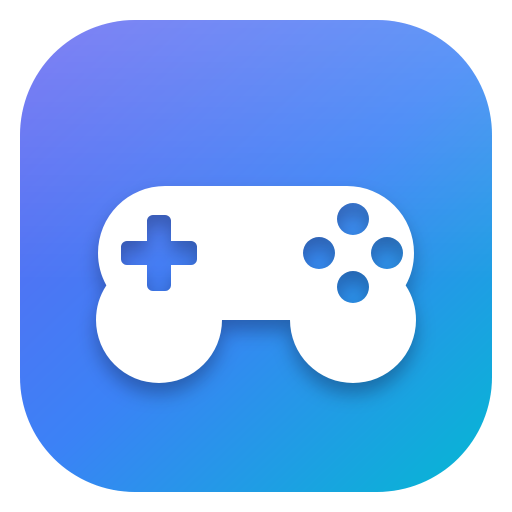
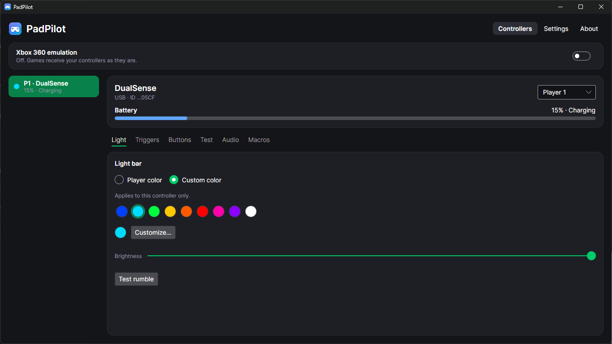
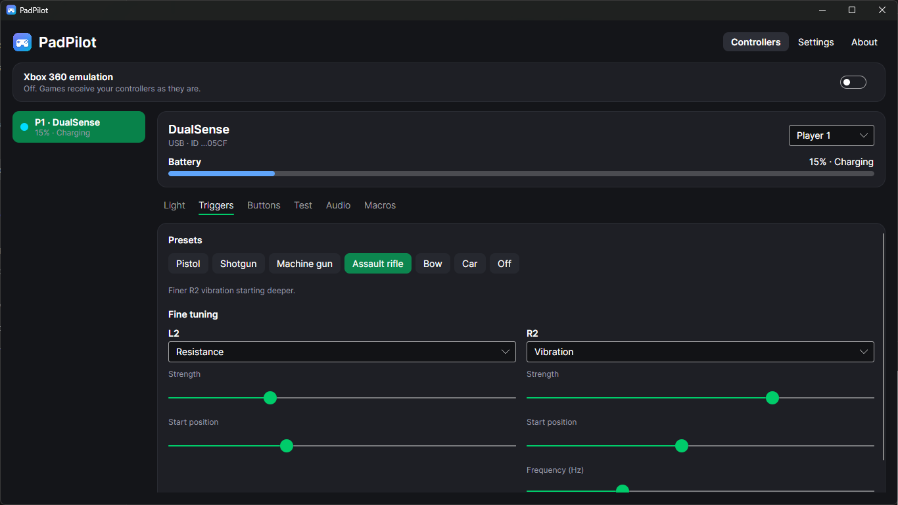
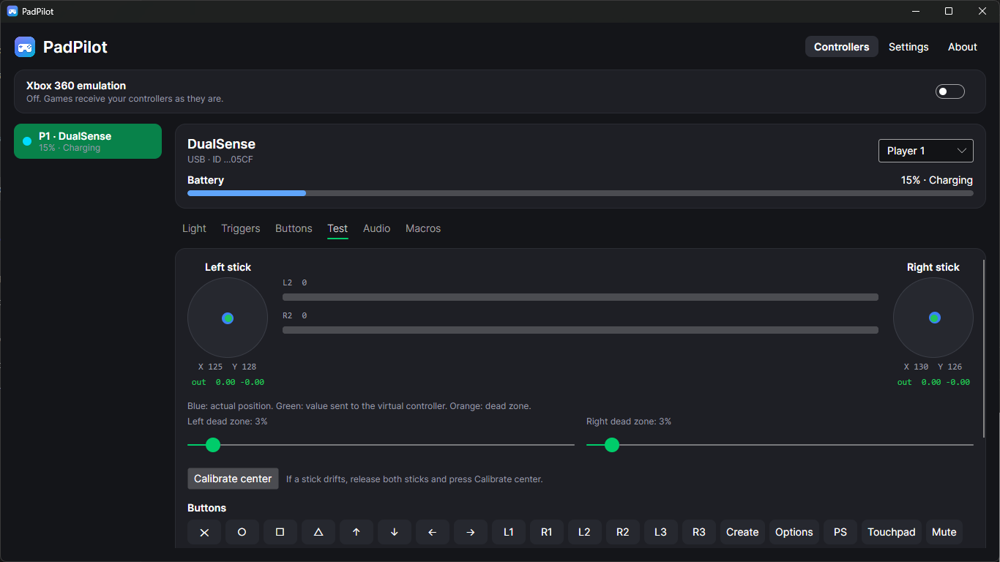
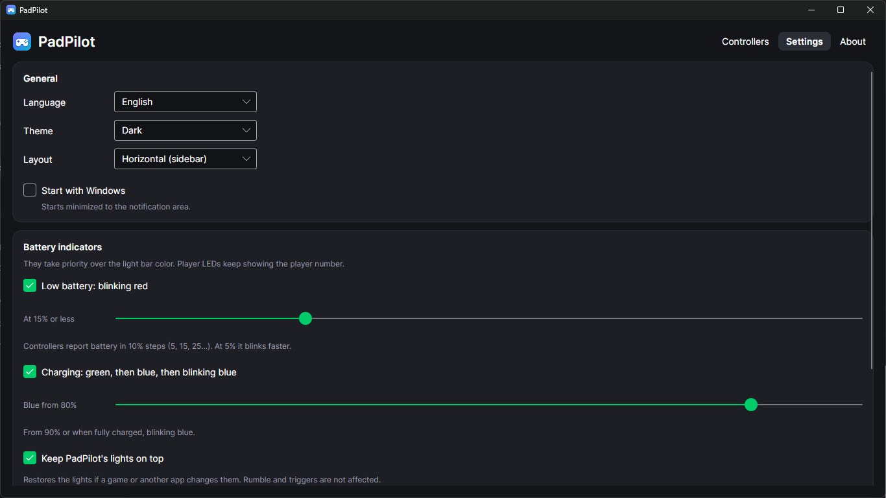

PadPilotGestor de mandos para Windows. Configura tu DualSense, DualShock 4 o mando genérico: luz, gatillos, botones, audio y emulación Xbox.
Controller manager for Windows. Set up your DualSense, DualShock 4 or generic controller: light, triggers, buttons, audio and Xbox emulation.
DualSense, DualSense Edge, DualShock 4 y mandos genéricos, por USB o Bluetooth, con jugador 1-4.
DualSense, DualSense Edge, DualShock 4 and generic controllers, via USB or Bluetooth, as players 1-4.
Color por jugador o por mando, intensidad y avisos de batería baja y carga con prioridad sobre los juegos.
Color per player or per controller, brightness, and low-battery and charging indicators that override games.
Perfiles de un clic (pistola, escopeta, ametralladora, arco, coche) y ajuste fino.
One-click presets (pistol, shotgun, machine gun, bow, car) and fine tuning.
Asigna botones Xbox, teclas, atajos de Windows o secuencias de macros a cualquier botón.
Assign Xbox buttons, keys, Windows shortcuts or macro sequences to any button.
Para juegos que solo aceptan mandos Xbox, respetando el orden de jugadores y con vibración.
For games that only accept Xbox controllers, keeping player order, with rumble.
Corrige sticks que se mueven solos (drift) y prueba sticks, gatillos, botones y touchpad en vivo.
Fix drifting sticks and test sticks, triggers, buttons and the touchpad live.
Por USB: nivel del micrófono, botón Mute con LED, escucharte, y prueba de los audífonos del mando.
Over USB: mic level, Mute button with LED, self-monitoring and controller headphone test.
Vive en la bandeja, tema claro u oscuro, español e inglés, inicio con Windows.
Lives in the tray, light or dark theme, English and Spanish, starts with Windows.




| Windows 10/11 | 64 bits. No necesita instalar .NET: viene incluido. 64-bit. No .NET install needed: it's included. |
| ViGEmBus | Solo para la emulación Xbox 360. Gratuito. Only for Xbox 360 emulation. Free. |
| HidHide | Opcional: oculta el mando original a los juegos durante la emulación. Gratuito. Optional: hides the physical controller from games during emulation. Free. |
Ese aviso (SmartScreen) aparece con programas nuevos que aún no tienen reputación. Pulsa "Más información" y luego "Ejecutar de todas formas". Si tienes Smart App Control activado (Windows 11), puede bloquearla sin esa opción: en ese caso usa la versión de Microsoft Store, que va firmada.
That warning (SmartScreen) appears for new apps that don't have reputation yet. Click "More info" and then "Run anyway". If Smart App Control is on (Windows 11), it may block the app without that option: use the Microsoft Store version instead, which is signed.
Sí. Si Steam cambia la luz del mando, PadPilot la restablece. Para evitar conflictos con los botones, desactiva "Soporte de configuración para PlayStation" en Steam.
Yes. If Steam changes the controller light, PadPilot restores it. To avoid button conflicts, turn off "PlayStation Configuration Support" in Steam.
No. En PC, el audio del mando (micrófono y audífonos) solo está disponible por cable USB.
No. On PC, the controller's audio (microphone and headphones) is only available over USB.
En %AppData%\PadPilot. Cada mando recuerda su configuración y la aplica al conectarse.
In %AppData%\PadPilot. Each controller remembers its settings and applies them when it connects.